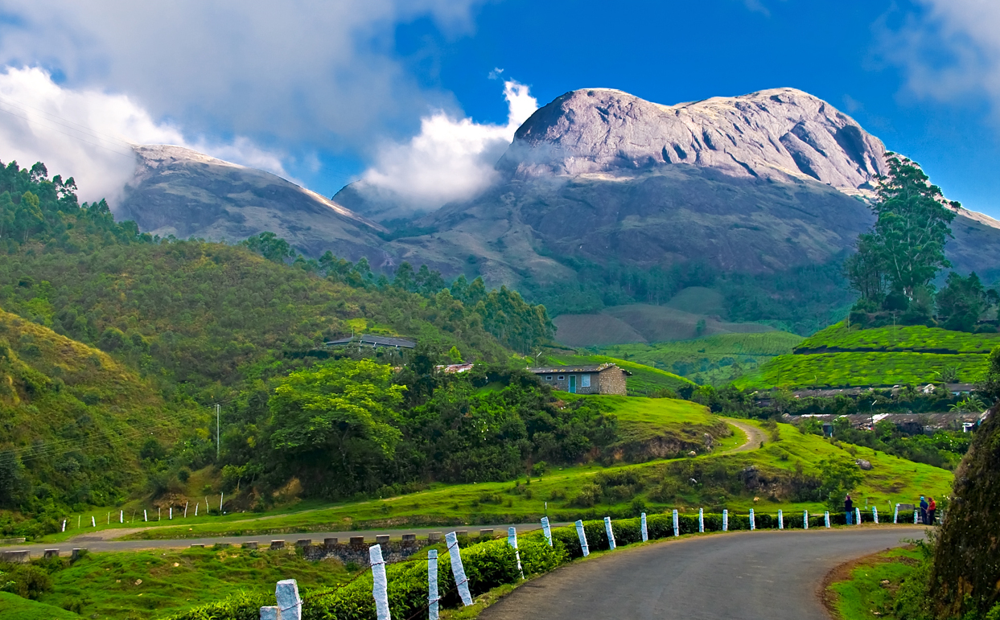

Idukki
Idukki is Kerala's second largest district and has been blessed with numerous natural wonders. The high valleys and hill ranges of this landlocked region are fed by three major rivers - Periyar, Thalayar and Thodupuzhayar and their tributaries. Its forest still hosts many tribes and over half of the terrain is still covered with forests. People love going to the gigantic arch dam for getting its mesmerising view. Blessed with a wide range of trekking trail, each of them offers a spectacular view of the valley below and ranges above of Idukki. The place is also renowned for its exotic flora and fauna and one can come across many rare species while visiting Idukki.
TOURIST ATTRACTIONS

Thekkady
This is a wildlife sanctuary with backwaters situated on a hill station. Just describing it is so wonderful, imagine what it would actually look like in real life. People often like to go on a boat ride here to get a full insight into this place.
Hill View Park
This is a park situated on the hilltop, having all the elements of a normal park but The view of elephants enjoying their natural habitat makes it different.

Munnar
Munnar town is situated at an altitude ranging from 5000 to 8000 feet on the Kannan Devan Hills in Devikulam taluk and is the largest town in the Idukki district covering an area of nearly 557 sq. km. It is also called the Swiss of South India Munnar was once the summer resort of the British Governors of South India. Munnar is at the confluence of three rivers - Madurapuzha, Nallathanni, and Kundala.